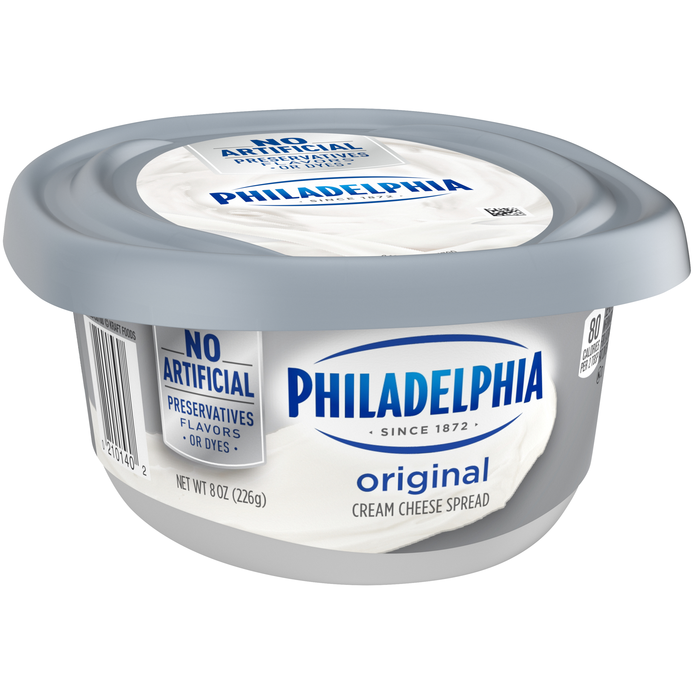
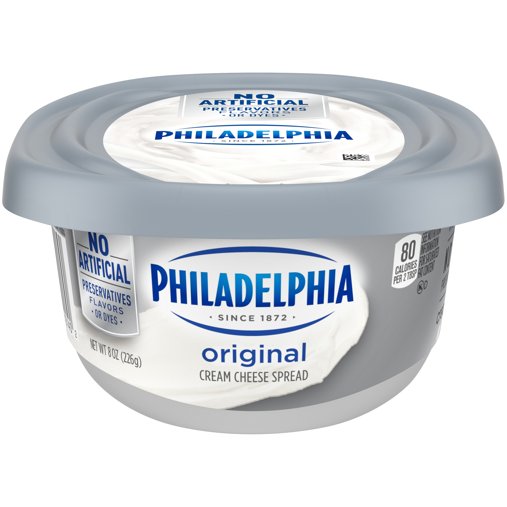
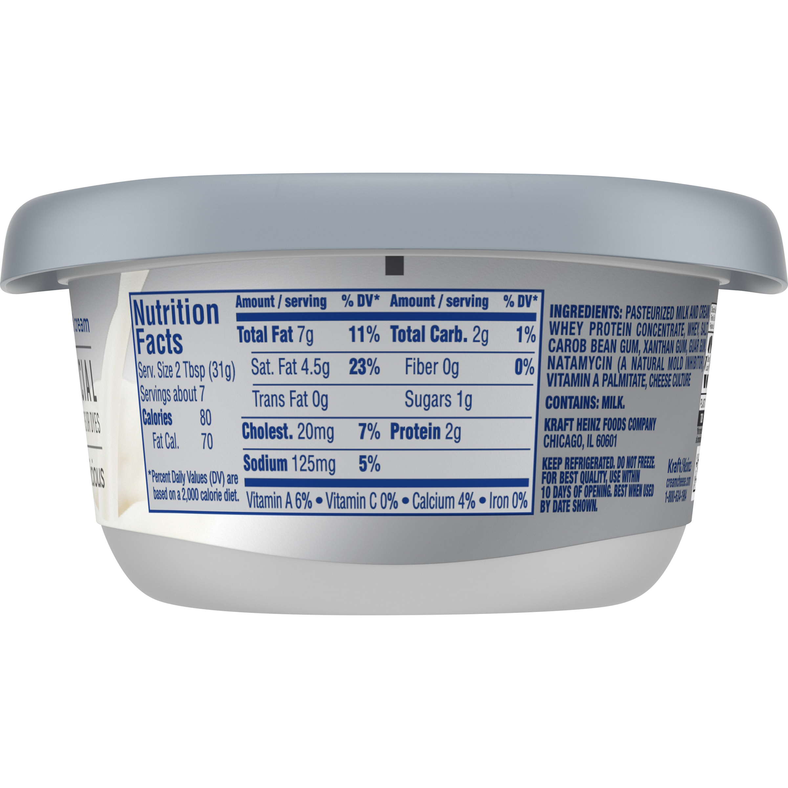
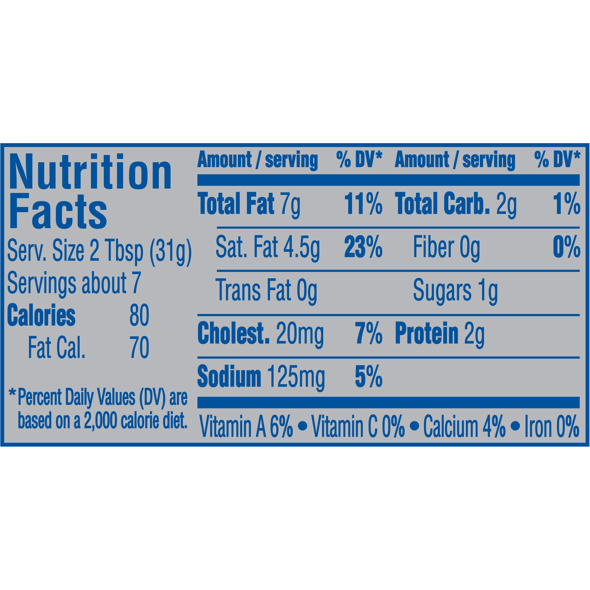

×
Philadelphia Plain Cream Cheese Spread 8 oz Tub
Ingredients
Pasteurized Milk And Cream, Whey Protein Concentrate, Whey, Salt, Carob Bean Gum, Xanthan Gum, Guar Gum, Natamycin (A Natural Mold Inhibitor), Vitamin A Palmitate, Cheese Culture.
Current price: $3.38
Qty:
Comment
User1 commented 5 days ago
Great!
Nutrition Facts
How much do you consume per meal?:Serving Size: 2 Tbsp (31g)
Servings per container: about 7
| Amount Per Serving | |||||
|---|---|---|---|---|---|
| Calories | 80 | ||||
| Calories from Fat | 70 | % Daily Values* | |||
| Total Fat | 7 | g | 11 | % | |
| Saturated Fat | 4.5 | g | 23 | % | |
| Trans Fat | 0 | g | |||
| Cholesterol | 20 | mg | 7 | % | |
| Sodium | 125 | mg | 5 | % | |
| Total Carbohydrate | 2 | g | 1 | % | |
| Dietary Fiber | 0 | g | 0 | % | |
| Sugars | 1 | g | |||
| Protein | 2 | g | |||
| Vitamin A | 6 | % | Calcium | 4 | % |
| Vitamin C | 0 | % | Iron | 0 | % |
*Percent Daily Values are based on a 2,000 calorie diet. Your daily values may be higher or lower depending on your calorie needs.